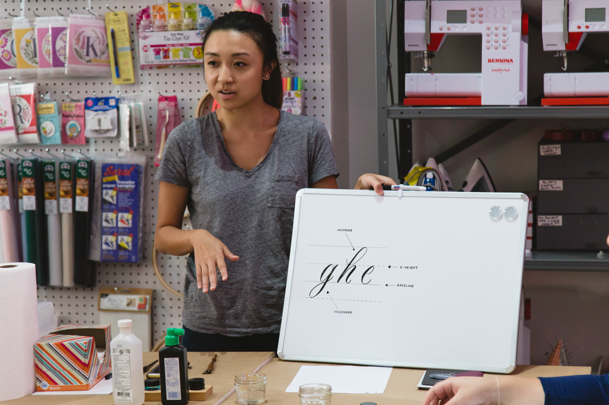
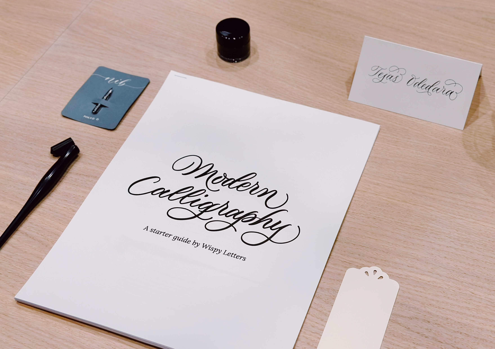

The gift of lifelong learning
Having taught hundreds of students since 2018, learn the fundamentals of calligraphy with me through workshops. Each session is intentionally paced, allowing space for both instruction and quiet practice.